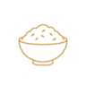
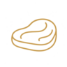
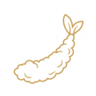

料理は、その日の仕入れで変わります。
饗応 元では、固定の「名物一品」だけで店を組み立てていません。旬の魚、馬刺し、黒毛和牛、季節の野菜や酒肴など、状態の良い食材を選び、その日に食べてほしい形へ仕立てます。
アラカルトはお席のみのご予約も可能です。コースは仕入れと仕込みのため、ご来店日の2日前までにご予約ください。
饗応 元の料理を形づくるもの
旬魚
造り、焼物、椀、酒肴など、魚の状態に合わせて仕立てます。
馬刺し
和食の枠に閉じず、酒と一緒に楽しめる素材として扱う饗応 元らしい一品です。
黒毛和牛
通常営業に加え、毎月29日の「肉会」でも部位や仕立てを変えてご提供します。
季節の酒肴
日本酒をもう一杯飲みたくなることまで考え、季節の食材で小さな一皿を組み立てます。
本日のメニュー例（価格の目安）
仕入れや季節により内容・価格が変わります。黒板でご案内する一品や時価の魚介は、当日店頭にてご確認ください。

一品料理和製麻婆豆腐
1,050円
鮪とアボカド
1,000円
アールグレイ香る鴨ロース
950円
肉汁水餃子
4ヶ
900円
京生麩の田楽
よもぎ麸
900円
豚肩チャーシュー
900円
ゲソ炒め
大葉ジェノベーゼ or バター炒め
800円
汲み上げ湯葉
750円
冷や奴子
ポン酢 or 醤油
350円
季節のフルーツ湯葉の白和え
750円〜900円
野菜（季節の野菜は黒板参照）
ゴボウの天ぷら／唐揚げ
ガラムマサラ添え
700円
長芋焼
バター or 醤油
650円
長芋フライ
650円
本日のポテトフライ
細 or 太
600円
ベビーリーフサラダ
オリジナル玉ねぎドレッシング
550円
ポテトサラダ
デュカ添え／いぶりがっこver.+150円・柴漬けver.+100円
550円
季節のお浸し
黒板参照
450円
酒肴
カラスミ大根
1,250円
バイ貝旨煮
900円
蟹と蟹味噌和え
900円
魚の南蛮漬け
黒板参照
800円
エイヒレ炙り
800円
鯖のへしこ炙り
750円
トロタク
トロとタクアン
750円
京都3大漬物盛り合わせ
すぐき、柴漬け、千枚漬け
700円
炙り明太子
600円
梅水晶
軟骨梅肉和え
550円
ホタルイカの沖漬け
450円
キュウリのぬか漬け
半本／一本
400円／700円
乾き物
ミックスナッツ
ノーマル、黒胡椒、燻製
400円
黒いカシューナッツ
550円
〆（ご飯・麺類）
大人の牛丼
黒毛和牛A5／並・小
並2,700円／小1,700円
鉄火丼
わさび抜き出来ます
1,300円
気まぐれパスタ
黒板参照
1,550円〜2,650円
炒飯
1,100円
自家製ラーメン
一番出汁、魚粉、鶏がらなど
1,050円
本日のカレー
お伺いください。合いがけ+100円／小・中・大
1,100円／1,300円／1,700円
出汁茶漬け
950円
茶そば
温 or 冷
850円
丹波黒鶏の雑炊
950円
白米
350円
TKG（卵かけご飯）
550円
TKG（トリュフ香るご飯）
750円
焼きおにぎり
1ヶ／2ヶ
400円／750円
デザート
本日のデザート
内容は黒板にてご案内

肉料理A5黒毛和牛ステーキ
100gあたり／黒板参照
黒板にてご案内
オーストラリア産ラムモモステーキ
100gあたり
1,300円
蝦夷鹿
100gあたり
2,300円
滋賀バームクーヘン豚（蔵尾ポーク）カツ
100gあたり
1,650円
滋賀バームクーヘン豚（蔵尾ポーク）焼き
100gあたり
1,450円
ハンバーグ
ブリードモー（白カビチーズ入り）
1,150円
黒胡椒ウインナー
2本／3本
600円／850円
タンユッケ
イタリア産仔牛
1,850円
タン先とタン下のタレ炒め
イタリア産仔牛
900円
焼き魚
本日のアラ焼
黒板参照
750円〜
鮭カマ焼
1ケ／2ケ
350円／650円
鯖醤油干し
1,100円
甘鯛塩焼
時価
1,800円〜2,600円くらい
国産鰻（白焼き／タレ焼き）
各ハーフ
1,700円／1本3,000円

揚げ物カラスミ餅
挟み揚げ
1,450円
牛肉コロッケ
1ヶ／2ヶ
400円／700円
季節の春巻き
1本／黒板参照
900円
鴨と山椒のキーマカレー春巻き
900円
生麩の揚げ出し
900円
揚げ出汁豆腐
750円
骨せんべい
塩 or ガラムマサラ or カレー
650円
チーズ系
チーズの麹味噌漬け
1種類／3種類
450円／1,250円
生ハムクリームチーズ
1,150円
奈良漬けとクリームチーズ
750円
いぶりがっこクリームチーズ
700円
明太子チーズ
700円
栗みそとクリームチーズ
500円
チーズ各種
10gあたり／黒板参照
400円〜450円
クリームチーズの酒盗和え
クラッカー添え
550円
本日のお造り
本日のお造り
2種類〜／厨房の黒板（左側）参照。3種50円引き、5種100円引き
鶏料理
白肝造り／串焼き
各700円
ヤゲン軟骨の唐揚げ
750円
ぼんじり柚子胡椒炒め
650円
鶏皮ポン酢
ゆで or 揚げ
600円
丹波黒鶏の鶏がらスープ
400円
京赤地鶏使用
手羽先の唐揚げ
350円／1本
手羽先の麻辣唐揚げ
追加
300円／1本
よだれ鶏
茹で鶏ピリ辛ダレ
800円
鶏胸肉の唐揚げ
800円
馬刺し
2種−50円、3種−100円。盛り合わせ可。
ハラミ炙り
1,950円
赤身特選ロース
1,750円
フタエゴ
1,400円
赤身上もも
1,400円
タテガミ
1,250円
ハツ
1,000円
心根（豚）
1,000円
桜ユッケ
1,750円
鴨の串焼き
2本よりご注文いただけます。
ズリ（但馬鴨）
塩焼き
1本300円
ハツ開き（但馬鴨）
塩orタレ
1本350円
丸ハツ（但馬鴨）
塩orタレ
1本400円
ネギ間（河内鴨・ムネ）
塩orタレ
750円
自家製つくね（河内鴨）
450円
河内鴨のつくねスープ
650円
日本酒は、銘柄より「今、何を飲みたいか」から。
酒匠の店主が、その日の料理、お客様の好み、飲む順番を見ながら日本酒をご提案します。日本酒に詳しくなくても問題ありません。「軽め」「香りがある」「食事に合う」「辛口が好き」など、一言から一緒に選びます。
入荷する銘柄や価格は時期によって変わります。最新の内容は店頭またはInstagramでご案内しています。